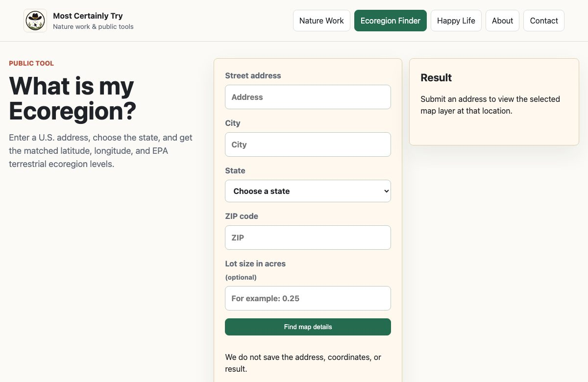

Place-based information design
Ecoregion Finder
The problem: Make ecological boundaries and place-based source layers easier to explore without requiring a specialist GIS workflow.
My contribution: Research synthesis, information architecture, interface design, and AI-assisted implementation.
What I made: A public interactive map that connects a location to EPA ecoregion boundaries and contextual source layers, with an expandable layer chooser.
Delivered artifact and limits: A working map with labeled source controls and mobile navigation. Geographic boundaries and source coverage have limits; the tool is not a property survey.
Explore the live project →